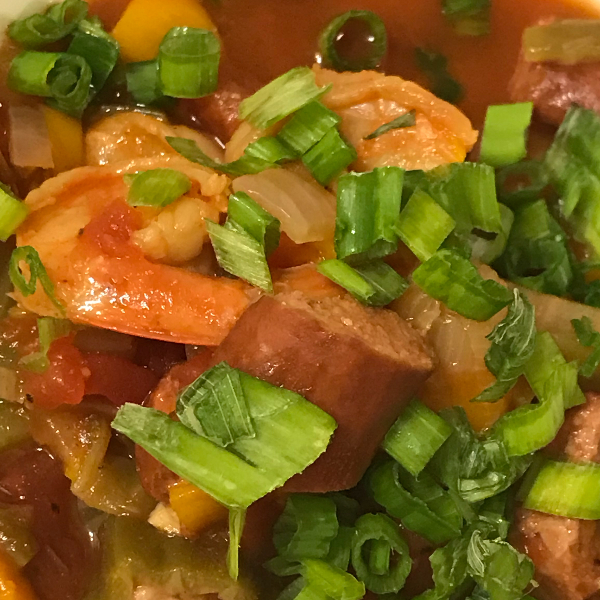

Jambalaya

Description
Here is a partial recipe for jambalaya. The rest of the recipe can be found at this site
- 2 andouille sausage, halved lengthwise and cut into 1/4-inch half-moons
- 1 pound ground beef
- 1 pound chicken breast, cooked, cooled, and chopped
- 1 pound cooked, peeled, and deveined shrimp
- 3 green bell peppers, seeded and diced
- The rest of the ingredients can be found here...
- Step 1 - Heat olive oil and butter in a large saucepan over medium heat. Add the onion and andouille sausage and cook and stir until the onion starts to brown, about 10 minutes. Stir in garlic and cook until fragrant, 1 to 2 minutes.
- Step 2 - Mix in crushed tomatoes, green bell peppers, zucchinis, Cajun seasoning, hot sauce, and chicken broth; bring mixture to a boil, reduce to a simmer, and cook uncovered until the liquid cooks off and the mixture is thick, about 15 minutes. Stir in chicken and shrimp and simmer until heated through, 1 to 2 minutes.
Credit to Morgan Mallory on allrecipes for the recipe!
Find the full recipe by clicking here.